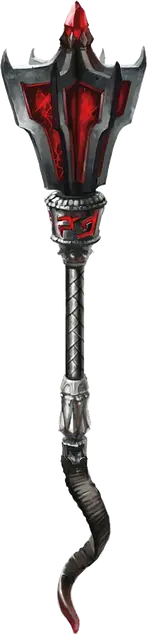

Булава черной короны
Mace of the Black Crown
Оружие (булава), артефакт (требуется настройка)

Эта булава имеет чёрную железную рукоять и рубиновое навершие с дьявольским выражением лица. Храня в себе дар Асмодея, она подходит для самых могущественных слуг Девять Преисподних.
Разум. Булава чёрной короны — это разумное оружие законно злого мировоззрения с Интеллектом 20, Мудростью 12 и Харизмой 18. У него есть нормальный слух и тёмное зрение на расстоянии 120 футов. Оружие телепатически общается со своим владельцем и может говорить, читать и понимать Общий и Инфернальный.
Индивидуальность. Жадная эриния [erinyes] по имени Ксартаза живет в булаве чёрной короны. Ксартаза хочет собрать как можно больше душ для Асмодея, поэтому оружие подталкивает своего владельца к законно злым действиям, манипулируя снами владельца. Бывший генерал Войны Крови, Ксартаза ненавидит демонов и наслаждается созданием продуманных планов сражения в любом противостоянии.
Дремлющий. В дремлющем состоянии булава даёт следующие преимущества:
- Вы можете говорить, читать и писать на Инфернальном.
- Вы получаете бонус +1 к броскам атаки и урона совершённым этим магическим оружием.
- Держа булаву, вы можете бонусным действием произнести командное слово на Инфернальном, заставляя пламя вырваться из навершия. Эти языки пламени излучают яркий свет в радиусе 40 футов и тусклый свет ещё на 40 футов. Пока булава пылает, она дополнительно наносит 1к6 урона огнём любой цели, по которой попадает атака. Пламя горит до тех пор, пока вы бонусным действием снова не произнесёте командное слово, или пока вы не выпустите булаву.
- Держа булаву, вы можете действием призвать беса [imp]. Любой дьявол, которого вы вызовете с помощью этой булавы, будет дружелюбен к вам и вашим спутникам на протяжении всего времени. Бес подчиняется любым устным командам, которые вы ему отдаете, и возвращается в Девять Преисподних через 10 минут после того, как вы его вызвали. Это свойство не может быть использовано снова до следующего рассвета.
Пробуждённый. Когда булава достигает пробуждённого состояния, она приобретает следующие свойства:
- Бонус к броскам атаки и урона увеличивается до +2, а дополнительный урон огнём, наносимый оружием при его воспламенении, увеличивается до 2к6.
- Свойство вызова дьявола с помощью оружия также может быть использовано для вызова бородатого дьявола [bearded devil].
- Вы получаете сопротивление урону ядом, пока вы держите это оружие.
Возвышенный. Когда булава достигает возвышенного состояния, она приобретает следующие свойства:
- Бонус к броскам атаки и урона увеличивается до +3, а дополнительный урон огнём, наносимый оружием при его воспламенении, увеличивается до 3к6. Огненный урон, наносимый булавой, игнорирует сопротивление урону от огня.
- Свойство вызова дьявола с помощью оружия также может быть использовано для вызова шипастого дьявола [barbed devil].
- Вы получаете сопротивление урону огнём, пока вы держите это оружие.
Свойства артефакта Предателя
Оружие Предателей набирает силу точно так же, как и Отголоски Дивергенции. В Дремлющем состоянии каждый из этих артефактов обладает одним малым положительным свойством и одним малым отрицательным свойством. Когда артефакт достигает Пробуждённого состояния, он приобретает дополнительное малое положительное свойство и малое отрицательное свойство. Когда предмет достигает своего Возвышенного состояния, он приобретает основное положительное свойство.